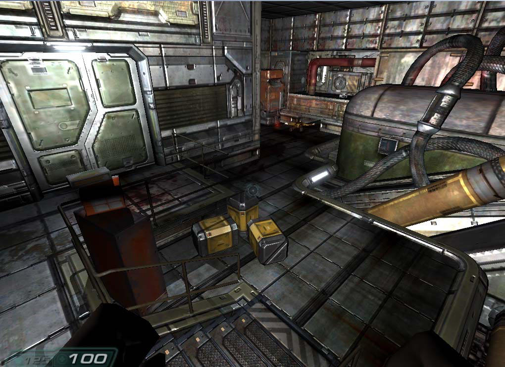
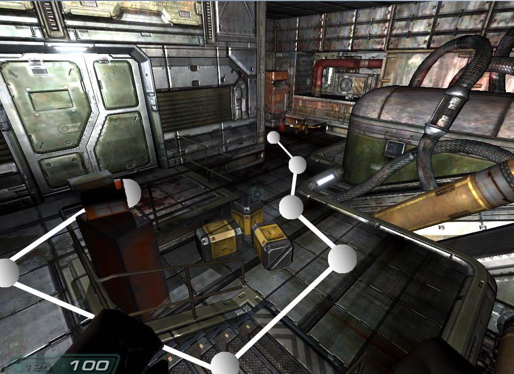
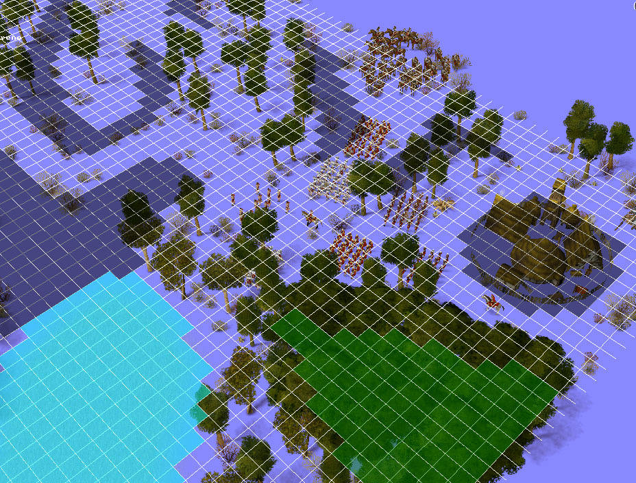
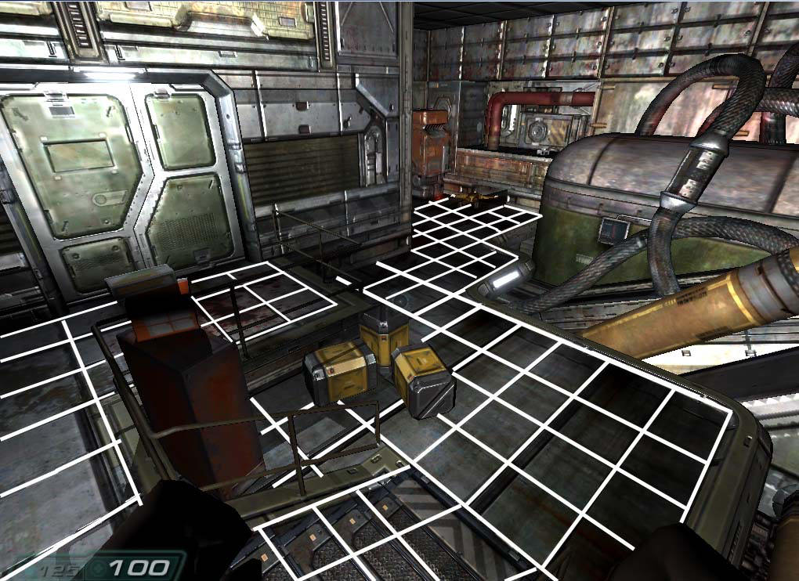
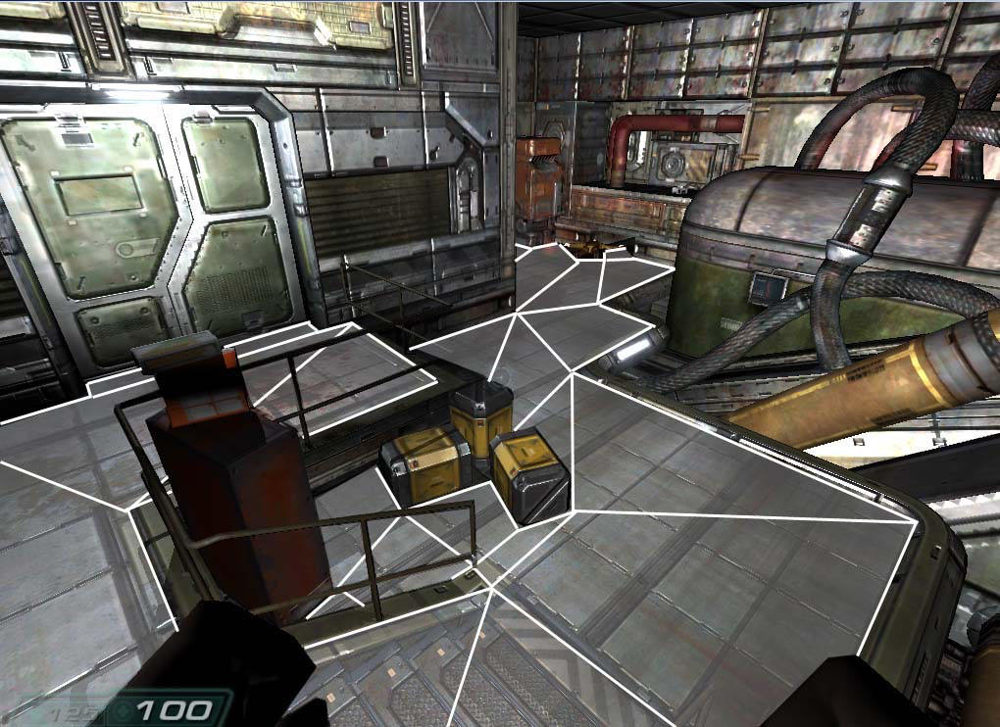
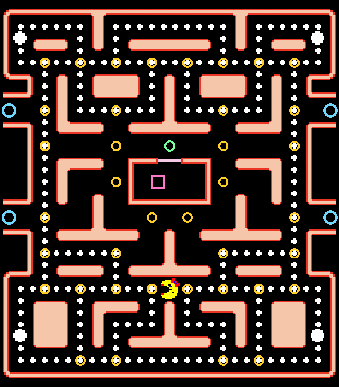
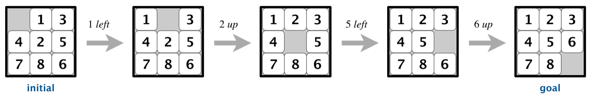
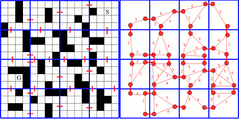
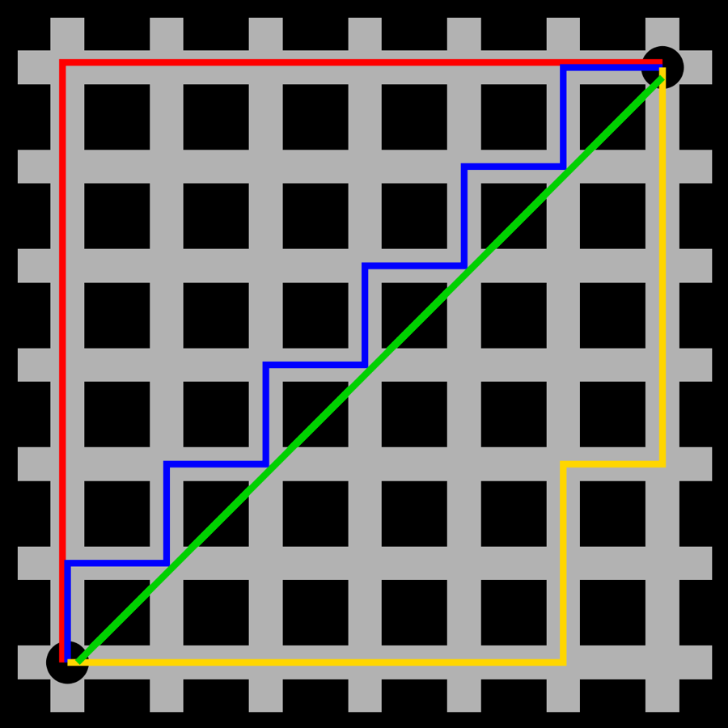
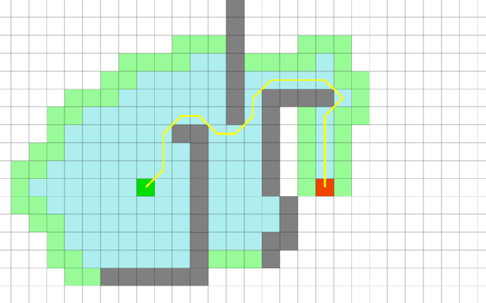

El problema
Un personaje está en un sitio y quiere ir a otro. Dicho así parece trivial, y lo es mientras el mapa esté vacío: apuntas y andas. Deja de serlo en cuanto hay paredes, porque entonces la línea recta ya no es un camino y hace falta buscar uno.

Esa escena tiene cientos de miles de triángulos, y ninguno de ellos le sirve al personaje para decidir por dónde ir. El problema de la búsqueda de caminos, o pathfinding, se parte siempre en dos mitades que conviene no mezclar:
- Representar el espacio. Convertir el mundo, que es continuo y complicado, en un grafo: un conjunto finito de sitios donde se puede estar, y qué sitios están conectados con cuáles.
- Buscar en el grafo. Dado ese grafo, encontrar una secuencia de pasos que lleve del nodo de salida al de destino, idealmente la más corta, idealmente sin mirarlo entero.
Porque el algoritmo de búsqueda es el mismo sea cual sea la representación. Cambiar de rejilla a malla de navegación no obliga a reescribir A*; cambiar de A* a búsqueda en anchura no obliga a recalcular el mapa. En Ms. Pac-Man la primera mitad viene hecha y precalculada, así que este tema se concentra en la segunda y en qué hacer con el resultado.
Representar el espacio
Tres familias de soluciones, por orden histórico. Las tres producen un grafo; se diferencian en quién lo construye, cuánta memoria cuesta y qué tal se ven las rutas que salen.
Puntos de ruta (waypoints)

Se marcan a mano, o se sacan analizando el terreno y quedándose con los puntos de interés, unos cuantos puntos del mapa, y se anota cuáles se ven entre sí. El NPC busca el punto más cercano a su posición, el más cercano a su destino, y calcula la ruta entre esos dos por el grafo.
Los puntos de interés son casi siempre las esquinas convexas de los obstáculos. Una esquina es convexa cuando el obstáculo sobresale hacia el suelo libre: el ángulo medido por dentro del obstáculo es menor de 180°, y por fuera queda más de media vuelta de espacio despejado. Es cóncava cuando pasa lo contrario, o sea cuando la esquina es el rincón de un entrante y lo que sobra es obstáculo.
El motivo de quedarse sólo con las convexas es que son las únicas por las que una ruta tiene que doblar: el camino más corto entre dos puntos separados por un obstáculo se pega a sus salientes. Un punto en una esquina cóncava estaría metido en el rincón, no lo vería casi nadie y no acortaría ningún camino.
- Es el sistema más sencillo de todos: no guarda información del terreno ni delimita zonas transitables.
- Una arista significa exactamente una cosa: «desde aquí se puede llegar hasta ahí», esquivando los obstáculos locales por el camino.
- Se adapta muy bien a interiores con pasillos, funciona en 3D y aguanta cualquier tipo de movimiento.
- Es lo que se usa para rutas prefijadas, como las patrullas.
- Y su defecto salta a la vista: las rutas salen poco naturales, como si los personajes fueran por raíles, porque literalmente van por raíles.
Pon obstáculos y mira qué grafo sale
Este ejemplo necesita JavaScript. Lo que enseña está contado en el texto y en el pseudocódigo de aquí al lado.
Coloca obstáculos con las formas de la barra, mueve la salida y el destino, toca los parámetros del método, y pulsa Calcular la ruta. La descomposición se rehace sola cada vez que cambias algo: lo que ves dibujado es lo que el algoritmo tiene para buscar.
Prueba a apagar Puntos en las esquinas y ponerlos tú, uno a uno, con la herramienta Punto de ruta: verás enseguida por qué esto se hacía a mano y por qué se hacía mal. Sube el margen y fíjate en que los puntos se despegan de las paredes, que es lo que necesita un personaje con volumen; súbelo demasiado y empiezan a desaparecer, porque ya no caben.
function construirGrafo(obstáculos, margen) puntos ← lista vacía for each o in obstáculos do for each esquina convexa e de o do p ← e desplazada margen hacia fuera if p cae en suelo libre then añadir p a puntos end if end for end for añadir a puntos los que se hayan puesto a mano aristas ← lista vacía for each par (p, q) de puntos do if el segmento p–q no corta ningún obstáculo then añadir (p, q, distancia(p, q)) a aristas end if end for return {puntos, aristas} end function function ruta(A, B, grafo) enganchar A y B a todos los puntos que vean return dijkstra(grafo, A, B) end function
«Desplazada hacia fuera» quiere decir en la dirección que bisecta la esquina por el lado del suelo libre. Y la comprobación de que el punto cae en suelo libre no sobra: en un pasillo estrecho, el punto de una esquina convexa se sale por el otro lado y hay que descartarlo.
Queda por decir cómo se comprueba que «el segmento p–q no corta ningún obstáculo», que es donde este método se pasa todo el tiempo: con n puntos hay n(n − 1)/2 parejas, y cada una se mide contra todos los lados de todos los obstáculos. Son tres pasos, y el primero es el que lo hace barato.
function corta(p, q, obstáculo) // 1. descarte rápido: si las cajas no se tocan, no hay nada que mirar if la caja de obstáculo no solapa con la caja de p–q then return False end if // 2. ¿cruza alguno de sus lados? for each lado (u, v) de obstáculo do if cruzan(p, q, u, v) then return True end if end for // 3. sin cruzar ningún lado sólo queda estar entero dentro return dentro(punto medio de p–q, obstáculo) end function function cruzan(a, b, c, d) // lado(a, b, x) = (b.x − a.x)(x.y − a.y) − (x.x − a.x)(b.y − a.y) // sale positivo si x queda a un lado de la recta a–b, negativo si al otro // y cero si está justo encima return lado(c, d, a) y lado(c, d, b) tienen signos opuestos y no nulos AND lado(a, b, c) y lado(a, b, d) tienen signos opuestos y no nulos end function
Las tres cosas que hay que mirar con lupa:
-
Rozar no es cortar. Si alguno de los cuatro
ladosale cero, los segmentos se tocan en un extremo o son colineales, y eso tiene que dar False. Aquí no es una sutileza teórica: los puntos de ruta viven pegados a las esquinas, y con el signo cero contando como cruce el grafo se quedaría prácticamente sin aristas. - El paso 3 no sobra. Un segmento enteramente dentro de un obstáculo no cruza ninguno de sus lados, así que los dos primeros pasos lo darían por bueno. Basta con mirar si su punto medio cae dentro, con la regla de la paridad: se lanza un rayo desde el punto y se cuenta cuántos lados atraviesa; impar significa dentro.
- El descarte por cajas es lo que lo salva. La comprobación completa es O(n² · lados), y en la escena de arriba eso son más de cien mil pruebas de signo cada vez que mueves un obstáculo. Comparando primero los dos rectángulos envolventes, la inmensa mayoría de las parejas se resuelve en cuatro comparaciones.
Rejillas

El mapa se guarda en un array bidimensional y una posición son dos coordenadas enteras. Viene de los juegos 2D y sigue siendo la representación por defecto en estrategia; también las hay hexagonales.
- Cada casilla lleva información del terreno: el tipo (tierra, hierba, parquet, cemento) y la transitabilidad, o sea si se puede pasar o no.
- El personaje tiene una posición real, con decimales, que se trunca para saber en qué casilla está.
- Se genera a mano o muestreando el mapa 3D, y pide bastante homogeneidad: si el mapa tiene detalles más finos que la casilla, la rejilla no los ve.

Baja el lado de la celda hasta que quepa el paso
Este ejemplo necesita JavaScript. Lo que enseña está contado en el texto y en el pseudocódigo de aquí al lado.
Coloca obstáculos con las formas de la barra, mueve la salida y el destino, toca los parámetros del método, y pulsa Calcular la ruta. La descomposición se rehace sola cada vez que cambias algo: lo que ves dibujado es lo que el algoritmo tiene para buscar.
Aquí está el compromiso de la rejilla, entero y en una pantalla. Con celdas grandes hay pocas casillas y la búsqueda vuela, pero la rejilla engorda los obstáculos hasta el borde de su casilla: un pasillo estrecho se cierra y el algoritmo dice, con toda la razón del mundo, que no hay camino. Bájala y el paso aparece, a cambio de multiplicar por cuatro el número de celdas cada vez que la partes por la mitad. Cambia también la vecindad de 4 a 8 y mira lo que le pasa a la forma de la ruta.
function construirRejilla(obstáculos, lado) for each casilla (c, f) de la rejilla do r ← el rectángulo que ocupa esa casilla bloqueada[c, f] ← algún obstáculo se solapa con r end for return bloqueada end function function ruta(A, B, bloqueada, vecindad) ini ← casilla que contiene A; fin ← casilla que contiene B if bloqueada[ini] OR bloqueada[fin] then return SIN CAMINO end if cola ← cola FIFO con {ini}; visitados ← {ini} while cola no esté vacía do k ← desencolar(cola) if k = fin then return reconstruir(padre, k) end if for each v in vecinas(k, vecindad) do if v está dentro AND NOT bloqueada[v] AND v ∉ visitados then padre[v] ← k; añadir v a visitados; encolar(cola, v) end if end for end while return SIN CAMINO end function
Ese bucle es el que se puede ver correr. En el ejemplo, después de calcular la ruta se abre la
fila Paso a paso: cada paso es una vuelta del while, o sea
una sola llamada a desencolar más el examen de sus vecinas. La tira
de abajo enseña las dos estructuras del pseudocódigo con sus nombres, y el laberinto se colorea
así:
| En la escena | En el pseudocódigo |
|---|---|
| Azul flojo | Está en visitados: ya se ha encolado alguna vez y no se volverá a mirar. |
| Amarillo | Sigue en la cola, esperando turno. Es la frontera de la búsqueda. |
| Rojo | La k de esta vuelta, la que acaba de salir de la cola. |
| Filo dorado | Las v que se han encolado en esta misma vuelta. |
Lo que se ve es el rasgo que define la anchura: la mancha azul crece en anillos, y el amarillo es siempre la capa de fuera. Por eso, cuando el destino aparece, aparece por el camino más corto. Merece la pena pararse en dos momentos: cuando la frontera se parte en dos al chocar con un obstáculo y rodearlo por los dos lados a la vez, y cuando las dos mitades se vuelven a juntar por detrás y una de ellas ya no encola nada, porque la otra había pasado antes por ahí.
Con celdas de 20 salen unos cien pasos, que es un tamaño cómodo para ir de uno en uno. Bajando el lado a 5 son varios miles: ahí conviene usar Reproducir o arrastrar el deslizador, y sirve para ver de golpe cuántas casillas de más visita una rejilla fina. Y con Vecindad 8 los anillos dejan de ser rombos y pasan a ser cuadrados.
Malla de navegación (navigation mesh)

Se cubre el suelo con polígonos, llamados sectores, calculados automáticamente a partir de la geometría de la escena: de las posiciones donde el agente puede pararse sale una triangulación (Constrained Delaunay Triangulation) que funciona como una alfombra sobre la zona que los NPC pueden recorrer, y da una representación pseudo-2D del mapa.
Los sectores se conectan entre sí por sus aristas, que se llaman portales, y son convexos, que es la propiedad que lo hace funcionar: dentro de un sector puedo ir en línea recta de cualquier punto a cualquier otro sin salirme.
| A favor | En contra |
|---|---|
| Los polígonos se adaptan a lo que sea y se ajustan muy bien a la zona transitable. | Cuesta memoria: un mapa grande necesita muchos sectores. |
| Las rutas que salen son de calidad, y no parecen de raíles. | Sufre con ciertos movimientos 3D: saltos, vuelo, movimiento libre. Se basa mucho en mantener al personaje pegado al suelo. |
| Se construye sola desde la escena, sin marcar puntos a mano. | Quake III y Doom III usan una variante con volúmenes en vez de polígonos, los AAS, precisamente por eso. |
Triangula el suelo y tira de la cuerda
Este ejemplo necesita JavaScript. Lo que enseña está contado en el texto y en el pseudocódigo de aquí al lado.
Coloca obstáculos con las formas de la barra, mueve la salida y el destino, toca los parámetros del método, y pulsa Calcular la ruta. La descomposición se rehace sola cada vez que cambias algo: lo que ves dibujado es lo que el algoritmo tiene para buscar.
Fíjate en el orden de las cosas. Primero se cose el suelo: el rectángulo del mapa con un agujero por obstáculo no se puede triangular de golpe, así que a cada agujero se le abre un puente hasta el contorno. Después se recortan orejas hasta dejarlo todo en triángulos. Y sólo entonces, con Fundir en sectores, se juntan los triángulos vecinos mientras el resultado siga siendo convexo: de ahí salen los polígonos grandes de una malla de verdad, y el número de sectores cae a la mitad o menos.
Con Tirar de la cuerda apagado, la ruta pasa por el centro de cada portal y se nota el zigzag. Enciéndelo y la ruta se tensa contra las esquinas: eso es lo que quiere decir rutas de calidad, y es justo lo que un grafo de puntos de ruta no puede dar.
function construirMalla(obstáculos) contorno ← el rectángulo del mapa for each o in obstáculos do // cada obstáculo es un agujero contorno ← coserAgujero(contorno, o) // un puente hasta el borde end for triángulos ← recortarOrejas(contorno) sectores ← triángulos while queden dos sectores vecinos cuya unión sea convexa do fundirlos en uno // Hertel-Mehlhorn end while portales ← los lados que comparten dos sectores return {sectores, portales} end function function ruta(A, B, sectores, portales) sA ← sector que contiene A; sB ← sector que contiene B cadena ← aEstrella(grafo de sectores, sA, sB) p ← los portales que cruza cadena, cada uno con su izquierda y su derecha return tirarDeLaCuerda(A, B, p) // el hilo más corto que pasa por todos end function
Y en Ms. Pac-Man
Aquí no hay que elegir: el laberinto ya es un grafo, y de los sencillos. Cada nodo es un sitio donde se puede estar, cada arista une dos nodos pegados, y el grado del nodo nunca pasa de cuatro porque sólo hay cuatro direcciones. Un cruce es un nodo con tres vecinos o más.

Eso es una suerte pedagógica: como la representación no estorba, se ve con toda claridad lo que hace el algoritmo. Y es también la razón de que en esta práctica el mérito no esté en encontrar el camino, que te lo da el motor, sino en decidir hacia dónde.
Búsqueda en espacios de estados
Con el mapa ya convertido en grafo, la búsqueda de caminos deja de ser un problema de geometría y pasa a ser el problema clásico de exploración de espacios de estados, que es una de las técnicas más importantes de la IA y con diferencia la más utilizada en videojuegos. Buscar un camino en un laberinto y resolver un puzle son, vistos así, exactamente el mismo problema.
- Estado
- Cada configuración posible del problema, representada con una estructura de datos. En el laberinto, el nodo donde estás; en el 8-puzle, la disposición de las fichas.
- Transición
- La lista de estados a los que se llega desde un estado previo tras aplicar una operación del dominio. También se les llama sucesores.
- Coste
- Lo que cuesta una transición. Puede ser 1 para todas, o el tiempo de cambiar de estación, o el terreno que cruzas.
- Camino
- Una secuencia de estados que lleva de uno a otro.
- Camino solución
- El que va del estado inicial al estado objetivo.
- Camino parcial
- El que va del inicial a un estado que todavía no es solución: el estado actual de la búsqueda.
- Función objetivo
- La que decide si un estado es o no el estado solución. A veces es una comparación; a veces es una condición.

Fíjate en que la figura no muestra el espacio de estados: muestra un camino dentro de él. El espacio entero son todas las configuraciones alcanzables, que en el 8-puzle son 181 440, y en el laberinto de Ms. Pac-Man son 1 293 nodos. Buscar es recorrer ese espacio sin tener que verlo todo.

El esquema general
Todos los algoritmos de búsqueda que vienen después son el mismo bucle. Cambia una sola cosa: de qué estructura se saca el siguiente nodo a expandir. Ese detalle es el que convierte el esquema en anchura, en profundidad o en A*.
function buscar(inicio, objetivo) frontera ← estructura con {inicio} // abiertos visitados ← conjunto vacío // cerrados padre[inicio] ← NULL while frontera no esté vacía do n ← sacar(frontera) if n = objetivo then return reconstruir(padre, n) end if añadir n a visitados for each v in sucesores(n) do if v ∉ visitados AND v ∉ frontera then padre[v] ← n añadir v a frontera end if end for end while return SIN SOLUCIÓN end function function reconstruir(padre, n) camino ← lista vacía while n ≠ NULL do insertar n al principio de camino n ← padre[n] end while return camino end function
Las dos estructuras tienen nombre propio y los vas a ver en todas partes: la frontera son los
nodos abiertos, los candidatos a seguir; y los visitados son los nodos
cerrados, los ya expandidos. El diccionario padre es lo que permite
devolver el camino y no sólo la distancia.
¿Qué vecino visito primero? ¿Se controlan los ciclos? ¿Cuándo cambio de camino? ¿Cuándo termino la búsqueda? ¿Cuánto cuesta la solución, y es óptima? Cada algoritmo es un juego de respuestas distinto a esas cinco preguntas, y ninguna respuesta es gratis.
El repertorio
| Métodos no informados o ciegos | Métodos informados o heurísticos |
|---|---|
| Primero en anchura | Búsqueda primero el mejor |
| Coste uniforme | Búsqueda voraz (greedy) |
| Primero en profundidad | Búsqueda óptima: algoritmo A* |
| Profundidad limitada | Búsqueda local: escalada, enfriamiento simulado, genéticos |
| Profundización iterativa | Búsqueda con adversario: minimax, poda alfa-beta |
| Bidireccional |
La diferencia entre las dos columnas es una sola: si el algoritmo tiene o no una heurística, o sea una pista sobre hacia dónde puede estar la solución. Tenerla mejora muchísimo el tiempo de búsqueda, y no cambia nada más. Las dos últimas filas de la derecha no buscan caminos, y salen en los temas 5 y 6; aquí interesan las tres primeras.
Búsquedas ciegas
Sin heurística, lo único que se puede hacer es fijar un orden de expansión y ser sistemático. Las tres que importan salen de cambiar una línea del esquema general.
Primero en anchura
La frontera es una cola FIFO: se expande siempre el nodo que lleva más tiempo esperando. Como consecuencia, se exploran todos los nodos a distancia 1, luego todos a distancia 2, y así. Cuando encuentra el objetivo, lo encuentra por un camino de longitud mínima.
function anchura(inicio, objetivo) cola ← cola FIFO con {inicio} visitados ← {inicio} while cola no esté vacía do n ← desencolar(cola) if n = objetivo then return reconstruir(padre, n) end if for each v in sucesores(n) do if v ∉ visitados then padre[v] ← n añadir v a visitados encolar(cola, v) end if end for end while end function
Todas las aristas del laberinto cuestan lo mismo, un turno, y en ese caso la anchura ya es óptima: el primer camino que encuentra es el más corto. Y además responde a la pregunta que de verdad te interesa, que no es «¿cuánto hay hasta ese nodo?» sino «¿cuál de todos estos nodos me pilla más cerca, y por dónde se va?». Una sola anchura desde tu posición contesta eso para todos los objetivos a la vez.
Primero en profundidad
La frontera es una pila LIFO: se expande el último añadido, así que la búsqueda se lanza por una rama hasta el fondo y sólo retrocede cuando se queda sin salidas. Gasta poquísima memoria y encuentra soluciones rápido, pero no son las más cortas, y en un grafo con ciclos se pierde si no se controlan los visitados.
Las dos, sobre el mismo grafo
Aquí se ven a la vez, y sobre todo se ven las estructuras, que es lo que de
verdad las distingue. Elige el método, pulsa Calcular la ruta y después recorre
el bucle vuelta a vuelta: cada paso es una sola llamada a sacar(frontera).
Saca de una cola o saca de una pila
Este ejemplo necesita JavaScript. Lo que enseña está contado en el texto y en el pseudocódigo de aquí al lado.
El grafo también se edita: con Nodo se ponen vértices nuevos, con Arista se
pincha en dos nodos para unirlos (o para separarlos si ya estaban unidos), y con
Salida A y Destino B se elige entre qué dos se busca. La tira de
abajo enseña la frontera con el elemento que va a salir entre corchetes, el
conjunto visitados y el diccionario padre, que es el que guarda el
camino.
function buscar(inicio, objetivo, modo) frontera ← {(inicio, NULL)} // cola FIFO si anchura, pila LIFO si profundidad visitados ← ∅ if modo = anchura then añadir inicio a visitados end if while frontera no esté vacía do (n, desde) ← sacar(frontera) // ← LA ÚNICA DIFERENCIA // anchura: el primero que entró // profundidad: el último que entró if modo = profundidad AND n ∈ visitados then continue end if añadir n a visitados; padre[n] ← desde if n = objetivo then return reconstruir(padre, n) end if for each v in vecinos(n) do if v ∈ visitados then continue end if if modo = anchura then añadir v a visitados end if añadir (v, n) a frontera end for end while return SIN CAMINO end function
Hay una segunda diferencia, más pequeña y más fácil de pasar por alto: cuándo se
marca. La anchura marca al encolar, y por eso ningún nodo entra dos veces en la
cola y el primer camino con el que llega a cada uno es el más corto. La profundidad marca al
sacar, así que su pila sí lleva repetidos: un mismo nodo puede entrar
por dos ramas y, cuando sale la segunda vez, se descarta. En el ejemplo se ve en la tira de
abajo, y es la razón de esa línea de continue.
Con anchura, la frontera es siempre la capa de fuera y el árbol azul crece a la par en todas direcciones; el camino que sale tiene el mínimo número de aristas. Con profundidad, la pila se hace honda y estrecha, el árbol azul se lanza por una rama hasta el fondo, y el camino que sale suele ser bastante más largo. Compara las dos cifras que da la lectura: vueltas del bucle y aristas del camino.
Y prueba a alargar una rama con la herramienta Nodo: la anchura ni se entera, porque no baja por ahí hasta el final; la profundidad se mete entera.
Coste uniforme, o Dijkstra
La frontera es una cola de prioridad ordenada por g(n), el coste real acumulado desde la salida. Es la anchura generalizada a aristas con coste distinto, y es exactamente el algoritmo de Dijkstra. Con todos los costes a 1 la cola de prioridad se comporta como una FIFO y sale la anchura, tal cual; por eso en el laberinto de Ms. Pac-Man no aporta nada, y sólo se gana algo si decides que unos pasillos «cuestan» más que otros, por ejemplo por ser peligrosos.
La idea es esa, pero con el contenedor solo no sale: hay que cambiar además cuándo se marca y qué se hace con un nodo que ya estaba en la frontera.
- Ya no se puede marcar al encolar. La anchura puede porque, con todas las aristas iguales, la primera vez que llegas a un nodo es por un camino de longitud mínima. Con costes distintos eso es falso: se puede llegar pronto por un camino caro y más tarde por uno barato. Así que Dijkstra marca al sacar, como la profundidad, y un nodo que sale y ya estaba marcado se descarta.
- Un nodo de la frontera puede mejorar. Si aparece un camino más barato hasta él, hay que bajarle la g y cambiarle el padre. Dos formas de hacerlo: reordenar la cola (decrease-key), o meterlo otra vez y descartar la copia vieja cuando salga.
Sin lo segundo el camino que devuelves puede no ser el barato aunque la distancia sí lo sea, que es un error incómodo de encontrar porque el número que imprimes es correcto.
function costeUniforme(inicio, objetivo) frontera ← cola de prioridad por g, con inicio g[inicio] ← 0; cerrados ← ∅ while frontera no esté vacía do n ← el de g menor // ← aquí estaba la FIFO if n ∈ cerrados then continue end if // ← se marca al SACAR, no al meter añadir n a cerrados if n = objetivo then return reconstruir(padre, n) end if for each v in vecinos(n) do if v ∈ cerrados then continue end if gNuevo ← g[n] + coste(n, v) if v ∉ frontera OR gNuevo < g[v] then g[v] ← gNuevo; padre[v] ← n // ← el nodo puede mejorar insertar o reordenar v en frontera end if end for end while return SIN CAMINO end function
Compáralo con el A* de la sección 6 y verás que son el mismo código: lo único que le falta aquí es sumarle la heurística al ordenar. Dicho al revés, y es la forma corta de recordarlo: A* con h = 0 es Dijkstra, y Dijkstra con todos los costes iguales es la anchura. Los tres son el bucle de la sección 3 con otra cosa dentro de la frontera.
Mira cómo se mueven las g
Este ejemplo necesita JavaScript. Lo que enseña está contado en el texto y en el pseudocódigo de aquí arriba.
Cada arista lleva su coste y cada nodo, debajo, su g de ahora mismo, que empieza en
∞ para todos menos la salida. Pulsa Calcular la ruta y ve vuelta a vuelta: en
cada una se cierra el nodo de g menor y se relajan sus vecinos, en
verde los que mejoran y en
rojo discontinuo los que no. La g que
acaba de bajar se pone en verde y en negrita.
Hay tres momentos que merece la pena cazar, y el grafo de ejemplo está hecho para que salgan los tres:
-
Una
gque baja después de estar puesta. ADse llega primero porBcon 9, y al cerrarCresulta que por ahí son 5. Baja lagy le cambia el padre: si sólo bajaras el número, la distancia sería correcta y el camino no. -
Una relajación rechazada. Al cerrar
F, el camino que ofrece aHes peor que el que ya tenía. Se mira y se descarta, y ese «se mira» también cuesta. -
Una entrada vieja en la cola.
Dentró dos veces, con 9 y con 5. Cuando sale la de 9 ya estaba cerrado, así que se tira. Es la otra forma de hacer lo del decrease-key: no tocar la cola y descartar la copia rancia al salir.
Pon los Costes a todos a 1 y vuelve a calcular. La cola de prioridad deja de reordenar nada, los nodos salen en el orden en que entraron, y lo que recorre la pantalla es exactamente la anchura de dos secciones más arriba: el camino que sale es el de menos aristas. Con la herramienta Coste y el deslizador de al lado puedes volver a poner los costes que quieras y ver cómo cambia la decisión.
Heurísticas
Una función heurística h(n) es una función matemática que devuelve un valor numérico menor cuanto más cerca está un estado cualquiera del estado objetivo. Es una estimación, no una medida: si supiéramos la distancia real ya no haría falta buscar.

En la figura, los tres caminos escalonados miden lo mismo, doce tramos, porque la distancia Manhattan sólo cuenta cuánto hay que moverse en cada eje: |x₁ − x₂| + |y₁ − y₂|. La diagonal verde es la distancia euclídea, la línea recta, que siempre es menor o igual. Y ninguna de las dos es el camino que de verdad se recorre si hay paredes por medio.
Admisible y consistente
Para que la heurística sirva sin estropear la solución tiene que cumplir dos propiedades, y la primera es la que de verdad importa:
- Admisible
- Nunca sobreestima el coste real de alcanzar el objetivo desde ese nodo: h(n) ≤ h*(n). Una heurística optimista no descarta el camino bueno; una pesimista sí puede.
- Consistente o monótona
- Dar un paso no puede hacer que la estimación baje más de lo que cuesta ese paso: h(n) ≤ c(n, n′) + h(n′) para toda arista. Con eso, un nodo cerrado ya tiene su mejor camino y no hay que volver a mirarlo.
Consistente, dicho de otra forma
La definición con la desigualdad puesta así no dice gran cosa, pero basta con pasar un término al otro lado para que se entienda:
Y eso ya se lee solo: la estimación puede bajar como mucho lo que cuesta el paso que das. Si un paso cuesta 4, la h puede bajar 4, o 3, o nada, o incluso subir. Lo que no puede es bajar 8, porque entonces la h del nodo de partida estaría diciendo que quedan muchos más de los que de verdad quedan, y eso es información falsa aunque el número siga siendo menor que el coste real.
Y por eso se llama monótona
Aquí está la consecuencia, que es lo que de verdad hace falta. Si la h no puede bajar más de lo que cuesta el paso, entonces la f no puede bajar nunca al avanzar por un camino. Sale en una línea:
Lo que la g sube al dar el paso, la h no alcanza a bajarlo. De ahí el nombre: la f es monótona no decreciente a lo largo de cualquier camino.
Para poder cerrar un nodo y no volver a mirarlo. Si la f nunca baja,
A* saca los nodos de la cola en orden de f no decreciente, y cuando saca uno ya no
puede aparecer después un camino mejor hasta él: ese camino habría tenido una f más
pequeña y habría salido antes. Por eso el pseudocódigo puede permitirse esa línea de
if v ∈ cerrados then continue sin pensárselo.
Con una h sólo admisible pero no consistente, A* sigue encontrando el camino óptimo, pero deja de poder hacer eso: hay que estar dispuesto a reabrir un nodo ya cerrado cuando aparece un camino más barato. Si no se reabre —que es lo que hace el pseudocódigo de estos apuntes— se puede devolver un camino peor.
Cuatro nodos. S→A cuesta 3, S→B cuesta 1, B→A cuesta 1 y
A→objetivo cuesta 10. Y esta heurística:
h(S)=0, h(A)=0, h(B)=11.
-
Es admisible: desde
Aquedan de verdad 10 y decimos 0; desdeBquedan 11 y decimos 11, clavado. Ninguna se pasa. -
No es consistente: en la arista
B→A, la h baja de 11 a 0, o sea 11, cuando el paso cuesta 1. -
Y se nota:
Asale de la cola con f = 3 antes queB, que tiene f = 12. Se cierra con g = 3. Después saleBy descubre un camino hastaAque cuesta 2, peroAya está cerrado. Resultado: 13 en vez de los 12 que costaba el bueno.
Casi todas las heurísticas geométricas razonables son consistentes de regalo: si el coste de moverte entre dos sitios es al menos la distancia que los separa, entonces la distancia en línea recta al destino cumple la desigualdad sin que nadie haga nada, porque la propia distancia ya la cumple. Es el caso de la euclídea y de la Manhattan en una rejilla, y es el caso del ejemplo de A* de más abajo.
Donde sí se rompe es al multiplicar la heurística por un peso mayor que 1. Si la h era consistente y la multiplicas por 1,5, cada bajada se multiplica también por 1,5 y ya puede pasarse del coste del paso. Eso es exactamente lo que hace el deslizador de ese ejemplo, y lo que explica que a partir de cierto peso devuelva un camino peor.
Tanto la euclídea como la Manhattan son admisibles en una rejilla sin paredes, porque cualquier camino real tiene que recorrer al menos esa separación. En cuanto hay paredes siguen siendo admisibles, porque el camino real sólo puede ser más largo, pero se vuelven malas: el número que dan se parece cada vez menos al real, y la búsqueda vuelve a explorar de más.
Las tres métricas del motor
El simulador tiene las tres, en un enumerado que le pasas a casi cualquier método que hable de distancias:
/**
* DM stands for Distance Metric, a simple enumeration for use with methods that
* require a distance metric. The metric available are as follows:
* PATH: the actual path distance (i.e., number of step required to reach target)
* EUCLID: Euclidean distance using the nodes' x and y coordinates
* MANHATTAN: Manhattan distance (absolute distance between x and y coordinates)
*/
public enum DM {
PATH, EUCLID, MANHATTAN
}EUCLID y MANHATTAN mienten
Las dos miden sobre las coordenadas de pantalla, y por tanto atraviesan las
paredes. Dos nodos separados por un muro salen pegadísimos, y un fantasma que está al
otro lado del túnel sale lejísimos. Para decidir, usa siempre DM.PATH, que cuenta
los pasos de verdad por los pasillos y además está precalculada, así que no es más cara. Las
otras dos existen porque en el motor original hacían falta como heurística: aquí ya no.
A*
El algoritmo más usado, por sus buenas propiedades: es completo (si existe solución siempre la encuentra), es óptimo (si hay varias, encuentra la mejor) y es eficiente en el caso medio, aunque eso último depende enteramente de lo buena que sea la heurística.
La idea cabe en una fórmula. Cada nodo abierto se ordena por
- g(n): el coste real del camino recorrido para llegar a ese nodo desde el inicial.
- h′(n): el valor heurístico, lo que estimamos que queda desde él hasta el final.
Y la combinación es lo que lo hace funcionar: g por sí solo tiende a primero en anchura, h′ por sí solo tiende a primero en profundidad, que es la búsqueda voraz, y sumados dan una búsqueda que se lanza hacia el objetivo pero cambia de camino en cuanto aparecen nodos más prometedores.
| Si... | A* se convierte en | Y entonces |
|---|---|---|
| h = 0 | Coste uniforme (Dijkstra) | Sigue siendo óptimo, pero explora muchísimo más. |
| g = 0 | Búsqueda voraz | Muy rápido y ya no es óptimo: se traga el primer camino que apunte bien. |
| h = coste real | El camino, directamente | No expande ni un nodo de más. Es el límite teórico. |
Las dos listas
- Nodos abiertos. El último nodo, de momento, de un posible camino. El camino entero se puede reconstruir porque cada nodo guarda un puntero a su padre.
- Nodos cerrados. Los ya expandidos: todos los nodos intermedios de algún camino.
Las dos listas están ahí para gestionar la repetición de estados, que es la pregunta difícil: ¿qué hago si llego al mismo estado por otro camino? Respuesta: quedarme con el mejor. Si el hijo aparece por primera vez, calculo su coste previsto y lo guardo en abiertos; si ya había aparecido y el camino nuevo es mejor que el que tenía, sustituyo su padre y su g, y descarto el otro.

La forma de esa mancha es el resumen de todo el tema. No es un círculo, que sería lo que dibujaría el coste uniforme, sino un óvalo estirado hacia el destino: la heurística está tirando de la búsqueda. Y se abre en abanico al chocar con el muro, porque ahí la heurística deja de acertar y el algoritmo tiene que mirar a los lados.
function aEstrella(inicio, objetivo) abiertos ← cola de prioridad, ordenada por f cerrados ← conjunto vacío g[inicio] ← 0 f[inicio] ← h(inicio, objetivo) padre[inicio] ← NULL insertar inicio en abiertos while abiertos no esté vacía do n ← el de f menor en abiertos // el más prometedor if n = objetivo then return reconstruir(padre, n) end if sacar n de abiertos; añadir n a cerrados for each v in sucesores(n) do if v ∈ cerrados then continue end if gNuevo ← g[n] + coste(n, v) if v ∉ abiertos OR gNuevo < g[v] then padre[v] ← n // me quedo con el mejor camino g[v] ← gNuevo f[v] ← gNuevo + h(v, objetivo) insertar o reordenar v en abiertos end if end for end while return SIN SOLUCIÓN end function
Compáralo con el esquema general de la sección 3: son el mismo bucle. Lo único que ha cambiado es que la frontera está ordenada por f y que un nodo ya visto puede mejorar.
Sube y baja el peso de la heurística
Este ejemplo necesita JavaScript. Lo que enseña está contado en el texto y en el pseudocódigo de aquí arriba.
Una retícula de la esquina de abajo a la izquierda a la de abajo a la derecha. El coste de cada
arista es su longitud, salvo las pintadas más gruesas, que son terreno lento: la
fila de abajo, que cuesta el cuádruple, y sobre todo el atajo que une las dos
esquinas de un tirón, dibujado combado por debajo para que no se confunda con la fila. Cuesta 39,
y dando el rodeo por arriba son 36: lo que parece el camino bueno es el malo, por poco.
Encima de cada nodo va su g, su h y la suma; mientras no se haya
llegado a él sólo se enseña la h, porque es lo único que se sabe.
La h es la distancia en línea recta al destino, así que encima de cada
uno puedes leer g+h=f y ver de qué se
compone el número por el que se ordena la cola.
El grafo se edita entero. Con Mover se arrastra un nodo —pincha en él y vuelve a pinchar donde lo quieras— y los costes y las h se recalculan solos, porque salen de la geometría. Con Terreno y el deslizador de al lado se encarece o se abarata la arista que pinches: es un multiplicador sobre su longitud, así que 1 es terreno normal y 4, cuatro veces más lento. Y las aristas nuevas que pongas con Arista salen con el terreno que tenga puesto el deslizador.
Es lo que mantiene la heurística admisible: mientras ninguna arista cueste menos que su longitud, la distancia en línea recta al destino no puede pasarse. Si se pudiera poner terreno rápido, con un multiplicador por debajo de 1, la h dejaría de ser una cota inferior y A* perdería la garantía aunque el peso estuviera a 1.
El deslizador multiplica la heurística, y con él se recorren los tres regímenes de la tabla de arriba sin tocar una línea de código. Calcula con cada uno y compara las dos cifras de la lectura: coste del camino y nodos cerrados.
| Peso | Qué es | Qué le pasa |
|---|---|---|
| 0 | h = 0, o sea coste uniforme | La f es la g: la mancha crece a la redonda y cierra 22 de los 25 nodos. Camino de coste 36, el mejor. |
| 1 | A* con la heurística tal cual, admisible | La búsqueda se estira hacia el destino: 13 nodos cerrados en vez de 22, y el mismo camino de 36. Gratis. |
| 1,25 | Inflada, pero poco | 8 nodos, y todavía acierta con el 36. La garantía ya no existe, pero aquí aún no se nota. |
| 1,5 o más | Inflada: ya no es admisible | Cierra 2 nodos y se acabó: se traga el atajo y devuelve 39. Tres unidades peor, veinte nodos menos de trabajo. |
Porque está construida para serlo: el coste de una arista es su longitud redondeada hacia arriba (y multiplicada, en el terreno lento) y la h es la distancia en línea recta redondeada hacia abajo. Como la recta es el camino más corto entre dos puntos y ninguna arista cuesta menos que su longitud, la h no puede pasarse por mucho que muevas los nodos.
Sube el deslizador despacio mirando el coste. Con 1 y con 1,25 sigue saliendo 36; en 1,5 salta a 39 y el dibujo cambia de golpe: la ruta deja de rodear por arriba y se va por el atajo. Eso es que A* ha cerrado el destino con la g del atajo antes de que el rodeo tuviera tiempo de llegar, y un nodo cerrado ya no se vuelve a mirar.
Con peso w lo único que se puede prometer es que el camino no costará más de w veces el mejor. Aquí, con w = 1,5, sale un 8 % peor a cambio de mirar veinte nodos menos. Ese es el trato, y se hace a sabiendas cuando no hay tiempo, que es exactamente la situación de un personaje con 40 ms por turno.
Con la herramienta Mover puedes cambiar la geometría y buscar el punto en el que se rompe con otra disposición.
Y fíjate en dónde se le atraganta a la heurística: apunta al destino en línea recta, que es justo por donde está lo caro. Así que A* mira esa zona antes de decidirse a subir. Es la misma forma que tiene la mancha de la figura de arriba al abrirse en abanico contra el muro. Una heurística es una pista, no una respuesta: donde se equivoca, se paga en nodos mirados de más, y si la fuerzas, en calidad del camino.
Todo junto
Este es el remate de las dos primeras partes, y conviene jugar con él un rato. A la izquierda se elige cómo se parte el espacio —puntos de ruta, rejilla o triangulación— y debajo qué algoritmo busca en el grafo que sale. Las dos decisiones son independientes: doce combinaciones, la misma escena, y se pueden cambiar por separado.
Elige la partición y elige el algoritmo
Este ejemplo necesita JavaScript. Lo que enseña está contado en el texto: representar el espacio y buscar en él son dos problemas distintos, y se eligen por separado.
Pon obstáculos, mueve la salida y el destino, y calcula. La lectura da las tres cifras con las que se compara: nodos de la partición, nodos explorados y longitud de la ruta. El paso a paso funciona igual que en los ejemplos anteriores, con los mismos colores: azul lo cerrado, amarillo la frontera, rojo el nodo de esta vuelta.
Para que los cuatro algoritmos puedan correr sobre las tres particiones sin cambiar una línea, todas producen lo mismo: un grafo con posiciones. El coste de una arista es la distancia entre sus dos nodos, así que la distancia en línea recta al destino vale de heurística admisible en las tres. En la rejilla los nodos son las casillas libres; en los puntos de ruta, los puntos; en la triangulación, el centro de cada sector.
- La partición manda sobre el coste. Cambia de triangulación a rejilla de 10 sin tocar el algoritmo: el número de nodos se multiplica por veinte y el de explorados también. Elegir bien la representación ahorra más que elegir bien el algoritmo.
- El algoritmo manda sobre la calidad. Con la misma partición, pon profundidad y luego anchura: la ruta se alarga o se acorta sin que el mapa haya cambiado.
- A* no siempre gana por mucho. En un grafo pequeño, como el de la triangulación, la heurística casi no tiene nada que podar y A* y coste uniforme exploran parecido. Cuanto más grande es el grafo, más se separa.
Con la triangulación, la ruta va del centro de un sector al del siguiente y sale con más esquinas de las que necesita. Es lo que pasa cuando se busca sobre la malla y no se tira de la cuerda después: compárala con la del ejemplo de la sección 2, que sí la tensa. El grafo te dice por qué sectores pasar; convertir eso en una ruta bonita es un paso aparte.
A* en Ms. Pac-Man: ya está hecho
Y aquí viene la parte que cambia la práctica. En el simulador, A* está precalculado. El laberinto no cambia nunca, así que al cargarlo el motor computa de una vez todas las distancias entre todos los pares de nodos y las guarda en una tabla. Preguntar por una distancia es leer una posición de un array.
// pacman.game.Game. La tabla es triangular: como d(a,b) = d(b,a), sólo se
// guarda la mitad, y el índice se calcula con la fórmula del número triangular
public int getShortestPathDistance(int fromNodeIndex, int toNodeIndex) {
if (fromNodeIndex == toNodeIndex) {
return 0;
} else if (fromNodeIndex < toNodeIndex) {
return currentMaze.shortestPathDistances[((toNodeIndex * (toNodeIndex + 1)) / 2) + fromNodeIndex];
} else {
return currentMaze.shortestPathDistances[((fromNodeIndex * (fromNodeIndex + 1)) / 2) + toNodeIndex];
}
}
Los caminos completos, no sólo las distancias, salen de PathsCache, que guarda las
rutas entre cruces y las empalma. Consultar uno también es barato:
int[] camino = game.getShortestPath(desde, hasta); // la secuencia de nodos
int pasos = game.getShortestPathDistance(desde, hasta);La trampa: darse la vuelta
Esa distancia precalculada es la distancia óptima en el grafo, y el grafo no sabe que en el juego no se puede dar media vuelta en mitad de un pasillo. Ni Ms. Pac-Man ni los fantasmas pueden invertir el sentido, salvo los fantasmas en el instante en que te comes una píldora de poder. Así que la tabla puede decirte «ese fantasma está a tres pasos» cuando en realidad tiene que dar la vuelta a la manzana.
Para eso están las versiones con lastMoveMade, y estas sí ejecutan A* de
verdad, cada vez que se llaman:
// Respeta la regla de no invertir el sentido. Es lo que de verdad se va a recorrer.
int[] camino = game.getShortestPath(desde, hasta, ultimoMovimiento);
int pasos = game.getShortestPathDistance(desde, hasta, ultimoMovimiento);Y la heurística que usa ese A* es justo la tabla precalculada, que es admisible por construcción: el camino sin poder dar la vuelta nunca puede ser más corto que el camino pudiendo.
// pacman.game.internal.AStar: el corazón del algoritmo, tal cual está en el motor
start.g = 0;
start.h = game.getShortestPathDistance(start.index, target.index); // h admisible
start.reached = lastMoveMade;
open.add(start);
while (!open.isEmpty()) {
N currentNode = open.poll(); // el de f = g + h menor
closed.add(currentNode);
if (currentNode.isEqual(target)) break;
for (E next : currentNode.adj) {
if (next.move != currentNode.reached.opposite()) { // aquí vive la regla
double currentDistance = next.cost;
if (!open.contains(next.node) && !closed.contains(next.node)) {
next.node.g = currentDistance + currentNode.g;
next.node.h = game.getShortestPathDistance(next.node.index, target.index);
next.node.parent = currentNode;
next.node.reached = next.move;
open.add(next.node);
} else if (currentDistance + currentNode.g < next.node.g) {
next.node.g = currentDistance + currentNode.g; // camino mejor: me lo quedo
next.node.parent = currentNode;
next.node.reached = next.move;
}
}
}
}
Es literalmente el pseudocódigo de la sección anterior, con la condición del opposite()
añadida. Merece la pena abrirlo en Eclipse y leerlo entero una vez: está en el proyecto
MsPacManEngine, bajo pacman.game.internal.
Para los fantasmas, siempre la versión con lastMoveMade: no pueden
darse la vuelta y la diferencia es real. Para Ms. Pac-Man, la versión sin
él vale como estimación rápida, pero en cuanto midas «¿llego yo antes que el fantasma?» tienes
que comparar peras con peras.
De la distancia al movimiento
El motor no sólo te da caminos: te da directamente el siguiente movimiento. Y la implementación es tan corta que conviene verla, porque explica sus dos defectos:
// pacman.game.Game
public MOVE getNextMoveTowardsTarget(int fromNodeIndex, int toNodeIndex, DM distanceMeasure) {
MOVE move = null;
double minDistance = Integer.MAX_VALUE;
for (Entry<MOVE, Integer> entry : currentMaze.graph[fromNodeIndex].neighbourhood.entrySet()) {
double distance = getDistance(entry.getValue(), toNodeIndex, distanceMeasure);
if (distance < minDistance) {
minDistance = distance;
move = entry.getKey();
}
}
return move;
}- Es voraz de un solo paso: mira los vecinos, se queda con el que está más cerca del objetivo, y ya. No hay búsqueda, no hay plan, no hay memoria.
-
Y en la versión
getApproximateNextMove…, que es idéntica salvo que recorreallNeighbourhoods.get(lastMoveMade), se descarta además el vecino del que vienes.
| Método | Respeta el no-retroceso | Coste |
|---|---|---|
getNextMoveTowardsTarget(a, b, DM) | No | Cuatro consultas a tabla. |
getApproximateNextMoveTowardsTarget(a, b, últMov, DM) | Sólo al elegir el vecino, no al medir | Tres consultas a tabla. |
getNextMoveTowardsTarget(a, b, últMov, DM) | Sí, también al medir | Tres A* cortos. |
El nombre engaña: hoy ninguna de las tres calcula nada «aproximado», viene de versiones viejas del motor. La diferencia real está en si la distancia con la que compara sabe o no por dónde has llegado. Casi siempre coinciden; se separan justo cuando el camino corto desde el vecino pasaría por el nodo del que vienes, que es el que el juego no te va a dejar tomar.
Estrategias algorítmicas
Con el camino resuelto por el motor, lo que queda es la pregunta de verdad: ¿hacia dónde? Un controlador es una función que, cada turno, mira el estado y devuelve una de cuatro direcciones. Todo el diseño está en cómo se elige.
Por qué la regla voraz no basta
«Huye del fantasma más cercano» es la primera idea de todo el mundo, y es la que se escribe en el ejercicio 2 de la Práctica 0. Falla siempre, pero conviene ver por qué falla, porque el motivo no es el que suele contarse.
Merece la pena comprobarlo en los datos del propio motor, porque cambia el problema: en los cuatro laberintos no hay un solo nodo con una única salida. El primero tiene 1 293 nodos: uno es la cárcel, 1 254 son pasillo —dos salidas—, 32 son cruces de tres y 6 son cruces de cuatro. El laberinto entero es una malla de bucles, y el callejón sin salida del dibujo de toda la vida no existe.
Lo que sí existe es la regla de no darse la vuelta: Game.correctPacManDir descarta
el giro de 180° y te deja siguiendo recto. Así que meterse en un pasillo es un
compromiso: se sale por el otro extremo o no se sale. El callejón de este juego
no lo dibuja el laberinto, lo ponen los fantasmas, y dura lo que tarden en moverse.
Mirad lo que ve la regla. Desde el cruce, subir y seguir a la derecha ganan un nodo cada una, y no es casualidad: aquí ningún movimiento aleja más de un nodo, así que las salidas de huida no se pueden ordenar entre ellas. Recorriendo los 38 cruces del primer laberinto contra todas las posiciones posibles del fantasma, en el 99 % de los casos empatan todas. La regla no es que elija mal: es que no distingue.
Y el desempate no es inocente. getApproximateNextMoveAwayFromTarget recorre las
salidas y se queda con la primera que mejore estrictamente a la anterior; el recorrido va
en el orden del enum MOVE, que es UP, RIGHT,
DOWN, LEFT. Con todo empatado gana siempre la de arriba. Vuestra
Ms. Pac-Man tiene una preferencia sistemática por el norte que no tiene nada que ver con
sobrevivir, y el fantasma que le espera arriba no entra en la cuenta.
El problema es simétrico, y el ejercicio 2 de la Práctica 0 lo tiene igual: unos fantasmas
que persiguen con getApproximateNextMoveTowardsTarget van los cuatro al mismo nodo
por el camino más corto, así que acaban en fila por el mismo pasillo. Y cuatro fantasmas en fila
no cierran ningún bucle: por el otro lado se sale igual de bien que si sólo hubiera uno.
De aquí salen los dos arreglos, y ninguno de los dos es cambiar la fórmula de la distancia: mirar a todas las amenazas en vez de sólo a la más cercana, y mirar más lejos de un paso. Lo segundo no es una preferencia: si al entrar en un pasillo te comprometes a salir por el otro extremo, la pregunta no puede ser «¿qué nodo me aleja más?», tiene que ser «¿qué hay al final de ese pasillo, y quién llega antes?». Y eso, en este laberinto, tiene una unidad natural.
Pensar en cruces, no en nodos
En un pasillo no hay nada que decidir: sólo se puede seguir. Los únicos sitios donde una decisión cambia algo son los 38 cruces del primer laberinto. Eso sugiere dos cosas a la vez: que puedes decidir sólo cuando estás en un cruce, y que el grafo sobre el que conviene razonar no es el de 1 293 nodos sino el de cruces y los tramos que los unen.
function siguienteCruce(nodo, dirección) pasos ← 0 repeat dirección ← la única salida de nodo que no sea volver atrás nodo ← vecino de nodo en dirección pasos ← pasos + 1 anotar lo que haya en nodo: píldora, píldora de poder, fantasma until esCruce(nodo) OR nodo es objetivo return {nodo, dirección, pasos, lo anotado} end function
// Los métodos del motor con los que se escribe ese bucle
game.isJunction(nodo) // ¿es un cruce?
game.getPossibleMoves(nodo, ultimoMov) // salidas legales, ya sin la de volver atrás
game.getNeighbour(nodo, movimiento) // el nodo que hay en esa dirección
game.getMoveToMakeToReachDirectNeighbour(a, b) // la dirección que lleva de a a bnull es legítimo
Si tu getMove devuelve null, el motor lo descarta y el personaje sigue
recto. Eso convierte «decidir sólo en los cruces» en una línea:
if (!game.isJunction(game.getPacmanCurrentNodeIndex())) return null;Y de paso te ahorra el 90 % de las llamadas, con lo que el presupuesto de 40 ms deja de ser un problema aunque hagas una búsqueda de verdad en cada cruce.
La pregunta que ordena todo: ¿llego yo antes?
Un tramo es transitable si llegas al cruce del final antes que cualquier fantasma que pueda comerte. Eso no se mide con la distancia al fantasma: se mide comparando la distancia de cada uno al mismo punto.
function llegoAntes(cruce, misPasos) for each f in FANTASMAS do if esComestible(f) then continue end if // no me puede comer if estáEnLaCárcel(f) then continue end if // no está en el laberinto susPasos ← distanciaSinDarLaVuelta(f, cruce) if susPasos < misPasos + holgura then return False end if end for return True end function
// Y en código, con las dos exclusiones y la distancia que respeta el no-retroceso
private boolean llegoAntes(Game game, int cruce, int misPasos) {
for (GHOST f : GHOST.values()) {
if (game.isGhostEdible(f)) continue; // comestible: no es amenaza
if (game.getGhostLairTime(f) > 0) continue; // encerrado: no está en el mapa
int nodo = game.getGhostCurrentNodeIndex(f);
MOVE ult = game.getGhostLastMoveMade(f);
int susPasos = game.getShortestPathDistance(nodo, cruce, ult);
if (susPasos < misPasos + HOLGURA) return false;
}
return true;
}
Las dos exclusiones del principio no son detalles: sin ellas el controlador huye de fantasmas
comestibles, que son puntos gratis, y de fantasmas encerrados, cuyo nodo ni siquiera está
conectado con el laberinto. Y la HOLGURA está ahí porque empatar es perder: si
llegáis a la vez, te come.
Mirar dos cruces por delante
Con eso ya no te metes en un tramo donde te alcanzan antes de llegar al final. Falta el otro medio error: meterte en uno seguro que desemboca en un cruce del que no sale nada seguro. Ese es el callejón de verdad de este juego: no lo pone el laberinto, lo ponen los fantasmas, y aparece y desaparece cada pocos turnos.
function movimientosSeguros() árbol ← mapa vacío for each d in salidasLegales(miNodo, miÚltimoMov) do c1 ← siguienteCruce(miNodo, d) if hayFantasmaEnElTramo(c1) then continue end if if NOT llegoAntes(c1.nodo, c1.pasos) then continue end if árbol[d] ← conjunto vacío for each d2 in salidasLegales(c1.nodo, c1.dirección) do c2 ← siguienteCruce(c1.nodo, d2) if llegoAntes(c2.nodo, c1.pasos + c2.pasos) then añadir d2 a árbol[d] end if end for end for return árbol end function
Lo que sale es un arbolito de dos niveles: por cada dirección inmediata, cuántas salidas seguras hay después. Una dirección cuyo conjunto está vacío es una trampa aunque el primer tramo sea seguro; y cuando no hay más remedio que arriesgar, la que más salidas conserva es la menos mala. Profundidad 2 basta: a partir de ahí la predicción del movimiento de los fantasmas ya no vale nada.
Buscar el objetivo dentro de lo seguro
Y aquí es donde vuelve la búsqueda en anchura de la sección 4, con una sola modificación: no expande cualquier vecino, sino sólo los que caen dentro del árbol de movimientos seguros. Con eso, una sola pasada contesta «¿cuál es la píldora alcanzable más cercana sin morir por el camino, y qué dirección me lleva a ella?».
function buscarObjetivoSeguro(objetivos, árbol) cola ← cola FIFO visitados ← {miNodo} for each d in claves de árbol do // sólo arranco por lo seguro v ← vecino de miNodo en d padre[v] ← miNodo encolar(cola, {v, d}) añadir v a visitados end for while cola no esté vacía do {n, dir} ← desencolar(cola) if n ∈ objetivos then return primera dirección del camino reconstruir(padre, n) end if for each v in salidasLegales(n, dir) do if v ∉ visitados then padre[v] ← n añadir v a visitados encolar(cola, {v, dirección de n a v}) end if end for end while return NULL // no hay ningún objetivo alcanzable con seguridad end function
Compárala con getClosestNodeIndexFromNodeIndex, que hace lo mismo pero midiendo en
línea recta por la tabla y sin enterarse de los fantasmas. La versión propia cuesta unos pocos
miles de operaciones en el peor caso, se ejecuta sólo en los cruces, y es la diferencia entre un
controlador que come y uno que come y sobrevive.
Tres formas de escribir la decisión
Hasta aquí la decisión ha sido una lista de prioridades: comprueba esto, si se cumple haz aquello, y si no sigue bajando. Es la forma más fácil de leer y de defender, y es la que se supone en esta asignatura. Pero no es la única, y conviene conocer las otras dos porque resuelven bien lo que la lista resuelve mal.
| Reglas con prioridad | Función de evaluación | Mapa de costes | |
|---|---|---|---|
| La decisión es | El primer if que se cumple. |
La opción con mejor puntuación. | Lo que salga de buscar sobre un grafo con pesos. |
| Se afina tocando | El orden y los umbrales. | Los pesos de cada término. | El coste que se pinta alrededor de cada cosa. |
| Va bien cuando | Hay un criterio que manda sobre los demás: no morir. | Hay que sopesar cosas incomparables: comida contra riesgo. | El riesgo es continuo y depende del sitio, no de una condición. |
| Falla cuando | Dos criterios empatan: el orden decide a ciegas. | Los pesos se pisan y ya nadie sabe por qué eligió eso. | Se convierte en magia negra: mismo problema, un nivel más abajo. |
| Se depura | Escribiendo qué regla disparó. | Escribiendo los términos por separado, no el total. | Pintando el mapa, con un color por tramo de coste. |
La función de evaluación puntúa cada salida del cruce sumando términos con signo, y se queda con la mejor. La ventaja es que no hay que decidir a priori qué manda: lo decide el peso. El precio es que hay que afinar todos los pesos a la vez, y que una puntuación de 1 830 no explica nada.
function mejorSalida() mejor ← NULL; mejorValor ← −∞ for each d in salidasLegales(miNodo, miÚltimoMov) do c ← siguienteCruce(miNodo, d) valor ← wPíldoras × píldorasEnElTramo(c) − wAmenaza × amenaza(c) // cuánto me gana el fantasma a llegar + wSalidas × salidasDe(c.nodo) // un cruce con más salidas es refugio + wComible × premioPorFantasmaComestible(c) + wPoder × valorDeLaPíldoraDePoder(c) // premio o castigo, según cuántos haya cerca if valor > mejorValor then mejor ← d; mejorValor ← valor end if end for return mejor end function
Fijaos en el término de la píldora de poder: es el mismo peso con el signo cambiado según la
situación. Premio si hay dos o más fantasmas cerca —es el momento de gastarla—, castigo si no lo
hay —pasar por encima sin necesidad son 3 000 puntos tirados—. Un solo término bien pensado
sustituye a media docena de if.
El mapa de costes da un paso más y saca la decisión de la función: en vez de puntuar las salidas, pinta un coste sobre cada nodo del laberinto —caro cerca de un perseguidor, barato cerca de la comida— y deja que una búsqueda de coste mínimo, la de la sección 4, conteste sola. Es la misma idea que los influence maps de los juegos de estrategia.
function repintarCostes() ponerTodosLosNodosA(costeBase) for each f in FANTASMAS do if esComestible(f) then abaratarAlrededorDe(nodo(f), radio, factor) // atrae else encarecerAlrededorDe(nodo(f), radio, factor) // repele, y con caída con la distancia encarecerElCamino(caminoHastaMí(f), factor) // no sólo él: por donde viene end if end for if hayFantasmasEncima() then abaratarAlrededorDe(píldoraDePoderMásCercana(), radio, factor) end if end function
Pintar el mapa, capa por capa
El pseudocódigo de arriba dice «encarecer alrededor de» sin decir cuánto ni hasta dónde, y ahí está toda la técnica. Así que conviene verla con números. Una capa es un número por nodo que mide una sola cosa: lo cerca que se está de la comida, de un perseguidor, de una píldora de poder. Cada fuente vale 1 en su nodo y va perdiendo fuerza a cada paso, con una caída que es el único parámetro que tiene.
Con una caída de 0,75, cada paso vale tres cuartos de lo que valía el anterior:
a 0 pasos 1 a 1 paso 1 × 0,75 = 0,75 a 2 pasos 0,75 × 0,75 = 0,56 a 3 pasos 0,56 × 0,75 = 0,42 a 4 pasos 0,42 × 0,75 = 0,32 … a 11 pasos 0,04
Y ahora fijaos en las dos casillas recuadradas de la figura. Están las dos a dos casillas del fantasma en línea recta, una por encima y otra por debajo, y valen 0,32 y 0,04: la de arriba está a cuatro pasos de pasillo y la de abajo a once, porque para llegar hay que dar toda la vuelta. El mapa hereda la forma del laberinto porque se propaga por él, y eso es justo lo que no consigue ningún radio pintado con la distancia en línea recta. Es la lección de la sección 1 otra vez, ahora del lado del mapa.
Con varias fuentes se suman las influencias, y después cada capa se divide por su máximo. Ese paso parece de adorno y no lo es: sin él, una capa alimentada por veinte píldoras llega a valores mucho más altos que la de un solo fantasma, y su peso acaba pesando más sin que nadie lo haya decidido. Los pesos sólo se pueden comparar entre sí si todas las capas están en la misma escala.
Hecho eso, la función objetivo es una suma con pesos, y el signo de cada término dice si esa capa atrae o repele:
U(c) = wComida × comida(c) − wAmenaza × amenaza(c) + wPresa × presa(c) // fantasmas comestibles + wPoder × poder(c) // píldoras de poder + wSalidas × salidas(c) // cuántas salidas tiene el nodo: la única capa que no cambia nunca
Mirad el panel de la amenaza: no es un círculo alrededor del fantasma, es una mancha con la forma de los pasillos. Y mirad el total. El pasillo de en medio queda en rojo y parte el laberinto en dos, así que cualquier búsqueda de coste mínimo que use este mapa va a dar el rodeo sin que nadie haya escrito en ninguna parte «no pases por ahí». Ahí está la gracia de la técnica: el conocimiento no está en el código que decide, está en el mapa que se le da.
Lo único que cambia es el signo. Donde la utilidad sube, entrar sale barato:
coste(c) = máx(mínimo, base − U(c)). Se usa una forma u otra según lo que venga
detrás: si la decisión la va a tomar una búsqueda de coste mínimo —la de la
sección 4, sin tocar una línea— hacen falta costes; si la va a tomar un
máximo sobre las salidas, hace falta utilidad. El suelo del coste no es un
detalle: sin él, una zona muy buena saldría gratis y la distancia dejaría de contar.
Cambia los pesos y mira cómo cambia el mapa
Este ejemplo necesita JavaScript. Lo que enseña está en las dos figuras de aquí arriba y en el pseudocódigo.
El mismo laberinto de las figuras, ahora vivo. Con Colocas se pone y se quita todo: Ms. Pac-Man, fantasmas perseguidores, fantasmas comestibles, píldoras, píldoras de poder y muros. El mapa se repinta solo en cuanto tocas cualquier cosa. La barra de Pesos es la función objetivo de aquí arriba, un deslizador por término, y los cuatro botones de al lado son juegos de pesos con nombre para comparar deprisa. Con Ver se mira una capa sola en vez de la suma, que es la única forma de entender de dónde sale una mancha; con Números, el valor exacto de cada casilla. Y Jugar repite la decisión turno a turno: no es el juego —los fantasmas de aquí persiguen por el camino más corto y pierden un turno de cada tres—, pero basta para ver a dónde lleva decidir así cien veces seguidas.
Las tres técnicas de la tabla están sobre la misma escena, y lo que cambia entre ellas no es sólo el resultado: es qué se toca para afinarlas. Al pasar a las reglas, la barra de pesos desaparece de la pantalla, porque allí no pinta nada.
| Qué probar | Qué se ve |
|---|---|
| Los pesos son la estrategia. Pulsa A lo miedosa y Jugar; después A lo glotona, Al principio y Jugar otra vez. | Los mismos cinco números, con otros valores. La miedosa se lleva el nivel entero en 90 turnos; a la glotona la comen en 11. |
| La amenaza no juega en la misma liga. Sube sólo su peso, de 0 a 4, mirando el pasillo de en medio. | Con 0 el laberinto es todo amarillo y ella cruza por delante de los fantasmas. Subiendo, el pasillo se cierra y la ruta se va por los bordes. |
| La caída decide cuánto se ve. Bájala a 0,4 y súbela a 0,95. | Con 0,4 el mapa es miope y sólo sabe lo que tiene pegado. Con 0,95 todo el laberinto se entera de todo y el mapa se aplana hasta no distinguir nada. |
| Por dónde viene, no sólo dónde está. Enciende Por dónde viene con un fantasma a media distancia. | Se encarece también el pasillo que le trae hasta ti, que es el sitio exacto donde no hay que meterse. |
| Una capa sola. En Ver, pasa por comida, amenaza y salidas. | Las tres manchas que se suman en el mapa entero. Así es como se depura: capa por capa, no mirando el total. |
| La función de evaluación mira mucho menos. Cambia a Una función de evaluación. | Sólo se puntúan los dos o tres cruces a los que se puede salir. Debajo está el desglose por términos, que es lo que hay que imprimir para depurar: los términos, nunca el total. |
| El orden decide a ciegas. Cambia a Reglas con prioridad y prueba los dos órdenes con varios umbrales. | Con Primero comer el umbral da exactamente igual, porque la primera regla siempre se cumple y las demás no llegan a mirarse. |
Con el mapa pintado, la decisión más corta sería «vete a la casilla vecina que más valga». Eso se atasca en cuanto hay un máximo local: un cruce que es mejor que sus cuatro vecinas y peor que media docena de sitios a seis pasos, y ahí se queda oscilando. Por eso el ejemplo mira primero la mejor casilla dentro de un horizonte y después va hasta ella por el camino más barato. Baja el horizonte a 3 y se ve el atasco; súbelo a 16 y empieza a cruzar el laberinto entero detrás de algo que para cuando llegue ya no estará.
Comer una píldora son 10 puntos y que te coman es la partida. Cuando pongáis pesos de verdad,
el de la amenaza va a salir varias veces más grande que todos los demás juntos, y eso
no es que esté mal afinado: es que las dos cosas no se miden en la misma
escala. Lo que sí es un aviso serio es lo otro: con cinco pesos hay cinco maneras de que el
controlador haga algo raro y ninguna de decir cuál ha sido. Por eso se toca un peso cada
vez, se mira la capa sola antes que el total, y se escriben los términos por separado en
el println.
El primer laberinto tiene 1 293 nodos y al empezar el nivel hay unas 220 píldoras. Si la capa de comida se calcula sumando una propagación por píldora, la cuenta por tick es ésta:
una anchura por cada fuente 220 × 1 293 = 284 460 nodos una sola anchura, con las 220 ya en la cola 1 293 nodos
Doscientas veinte veces menos, y lo que se pierde es poco: la anchura multifuente no da la suma de las influencias, da la de la fuente más cercana, que para decidir casi siempre vale igual. Y hay otro ahorro más gordo todavía: la capa de comida sólo cambia cuando te comes una píldora, y la de salidas no cambia nunca. Lo único que hay que repintar en cada tick son los fantasmas.
Ninguna de las tres decide bien si los datos que recibe están mal. Una función de evaluación con
un término de amenaza calculado con la distancia sin lastMove elige mal con mucha
elegancia. El trabajo de verdad está en las funciones que contestan «¿llego yo antes?»,
«¿cuántas píldoras hay por aquí?» y «¿me da tiempo?». Lo de encima es la parte fácil.
Predecir a quien no controlas
El controlador de los fantasmas no decide a dónde va Ms. Pac-Man, y el de Ms. Pac-Man no decide a dónde van los fantasmas. Los dos tienen el mismo problema: adivinar lo suficiente como para llegar antes. Y hay tres niveles de respuesta, cada uno más caro que el anterior.
-
Proyectar en línea recta. Desde el nodo del otro, avanzar en su último
movimiento hasta el siguiente cruce. Es el mismo bucle de
siguienteCruce, y no falla nunca mientras el otro no cambie de idea: dentro de un pasillo no puede. - El abanico de cruces. Desde ese primer cruce, todas las salidas llevan a un segundo cruce; ahí ya no hay un destino sino un conjunto. Sirve para repartirse el trabajo entre varios fantasmas: si no sabes por cuál va a salir, cubre todas.
- Coincidir en el tiempo. Expandir dos anchuras a la vez —la de Ms. Pac-Man y la del fantasma— anotando no sólo qué nodos alcanza cada uno sino en qué turno. Un nodo al que los dos llegan en el mismo turno, y de frente, es una interceptación. Uno al que llega antes el fantasma pero por detrás, no: se lo come por la espalda y no pasa nada.
El coste de lo tercero es el de dos anchuras, o sea nada comparado con los 40 ms. Lo que hay que cuidar es la indexación: los nodos visitados no se marcan por nodo, se marcan por par (nodo, turno), porque llegar a un sitio en el turno 6 y llegar en el 14 son cosas distintas. Y conviene admitir una holgura de un turno arriba o abajo, porque los fantasmas comestibles van a media velocidad y el laberinto no está hecho a escala.
Lo mismo que con el árbol de seguridad: dos cruces. Una predicción a cuatro cruces es una rama de un árbol con 2⁴ hojas cuya probabilidad se reparte entre dieciséis posibilidades, y os va a costar más recalcularla cada turno que lo que aporta. El sitio donde la predicción sí es fiable al 100 % es el pasillo, porque ahí el otro no puede elegir.
Coordinación sin mensajes
En esta práctica los fantasmas no pueden hablar entre ellos: el Executor se configura
con setGhostsMessage(false). Da igual. Los cuatro los decide el mismo
método, con el mismo Game, en el mismo
turno: comparten toda la información que podrían haberse mandado. Coordinarse aquí no es
comunicar, es repartir.
El reparto más directo es una asignación: se calculan los sitios que hay que cubrir —los cruces por los que Ms. Pac-Man puede pasar— y se le da uno distinto a cada fantasma, el más cercano que quede libre. Es el algoritmo voraz de asignación, y con cuatro agentes y cuatro objetivos no hace falta nada mejor.
function repartirObjetivos() objetivos ← crucesAlcanzablesPorMsPacMan(profundidad 2) libres ← objetivos asignación ← mapa vacío for each f in fantasmasQuePersiguen() do // ni comestibles ni en la cárcel o ← el de libres más cercano a f if o ≠ NULL then asignación[f] ← o quitar o de libres // nadie repite objetivo end if end for return asignación end function
Sobre esa base hay tres variantes que merece la pena conocer, porque cuestan poco y cambian mucho la sensación de estar rodeado:
| Variante | Cómo funciona |
|---|---|
| Papeles como puestos | El papel de perseguidor no es de un fantasma concreto: se lo lleva el que esté más cerca ahora, con un cupo máximo por papel. Los fantasmas cambian de trabajo; la formación se mantiene. |
| Anillos | En vez de repartir cruces del mismo nivel, repartir profundidades: uno al primer cruce que Ms. Pac-Man tiene por delante, otro al segundo, otro al tercero. Se cierran círculos concéntricos. |
| Memoria en los cruces | Guardar, por cada cruce, la última dirección que tomó allí un fantasma; el siguiente que pase elige otra. Con un borrado cada pocas decenas de turnos, la dispersión aparece sola y nadie ha tenido que decidirla. |
Si los objetivos se vuelven a repartir en todos los turnos, un cambio mínimo de distancias intercambia los papeles de dos fantasmas y los dos se dan la vuelta: la coordinación oscila y no se mueve nadie. El arreglo es recalcular sólo cuando ha pasado algo: cuando Ms. Pac-Man cambia de dirección, cuando entra en un cruce, o cuando se acerca a una píldora de poder. Entre medias, cada fantasma sigue con lo suyo.
El reloj del modo comestible
La mitad de las decisiones interesantes de los dos controladores dependen de un solo número:
getGhostEdibleTime. Estos son los datos del motor con los que hay que contar, y están
todos en Constants:
| Dato | Valor | Consecuencia |
|---|---|---|
EDIBLE_TIME | 200 | Turnos de comestible en el primer nivel. |
EDIBLE_TIME_REDUCTION | 0,9 | Cada nivel dura un 10 % menos. En el nivel 5 son 131 turnos, no 200: los umbrales fijos envejecen. |
GHOST_SPEED_REDUCTION | 2 | El fantasma comestible se queda quieto uno de cada dos turnos: va a media velocidad. |
GHOST_EAT_SCORE | 200 | Y se dobla con cada fantasma de la misma píldora: 200, 400, 800, 1 600. La cadena entera son 3 000. |
POWER_PILL · PILL | 50 · 10 | La píldora de poder, sola, vale cinco píldoras. Con la cadena, trescientas. |
De la media velocidad salen las dos reglas que hay que escribir, y ninguna de las dos es «persíguelo si está cerca»:
| Quién decide | La pregunta | La cuenta |
|---|---|---|
| Ms. Pac-Man | ¿Me da tiempo a alcanzarlo? | Si huye, se aleja medio nodo por turno mientras yo avanzo uno: le gano a medio nodo por turno. Hacen falta ≈ 2 × distancia turnos, y tengo getGhostEdibleTime. Si viene hacia mí o está acorralado, mucho menos. |
| Los fantasmas | ¿Sigo huyendo? | Si el tiempo comestible que me queda es menor que lo que tardaríamos en encontrarnos, cuando nos crucemos ya no seré comestible: dejo de huir y gano posición mientras los otros tres siguen corriendo. |
Y de la cadena de 3 000 puntos sale la tercera decisión, que es la que más separa una Ms. Pac-Man buena de una normal: la píldora de poder es un recurso, no una píldora más. Comérsela de pasada con los fantasmas lejos son 50 puntos y una oportunidad menos. La forma más simple de escribirlo no es ir a buscarla: es mantenerse lejos de ella mientras no haya tres fantasmas fuera y cerca, y dejar que la persecución te lleve hasta ella cuando toque.
EDIBLE_ALERT vale 30: es el momento en que los fantasmas empiezan a parpadear en
pantalla. No es una constante de juego, es de dibujo, pero marca bien el umbral a partir del cual
perseguir a un fantasma comestible ya suele ser mal negocio. Si lo usáis como umbral, ponedle
nombre propio y no el de la constante del motor.
El presupuesto
Cada llamada a getMove tiene 40 ms anunciados en el parámetro
timeDue, pero conviene saber qué significa eso exactamente. En
runGame y runExperiment, que son el modo de clase y el de corrección, el
motor llama a tu método y se queda esperando: nadie lo corta, y un cálculo de
200 ms se usa entero. Lo único que pagas es reloj. Y como además no hace falta
devolver un movimiento en cada turno —si devuelves null el motor sigue
recto—, lo sensato es no repartir el presupuesto a partes iguales: gastar en los cruces, que son
uno de cada diez turnos, y no gastar nada en los pasillos.
El detalle completo, con lo que cambia en los modos que sí llevan reloj, está en las reglas de simulación de la Práctica 1. Órdenes de magnitud con los que contar:
| Operación | Cuesta |
|---|---|
getShortestPathDistance(a, b) | Una lectura de array. Gratis. |
getShortestPath(a, b) | Empalmar tramos ya guardados. Barato. |
getShortestPath(a, b, últMov) | Un A* de verdad. Barato, pero no gratis: no lo llames cuatro veces con los mismos argumentos. |
| Una anchura sobre el laberinto entero | 1 293 nodos. Perfectamente asumible una vez por cruce. |
| Lo mismo, en cada uno de los 4000 turnos | Empieza a notarse. Por eso se decide en los cruces. |
Ver lo que piensa
Nada de esto se depura leyendo el código: se depura mirándolo. GameView pinta encima
del laberinto, y siempre detrás de un interruptor: no se puede dejar encendido al entregar, por el
motivo que hay debajo del código.
// un color por motivo, y todo detrás de un interruptor que se apaga al entregar
if (DEBUG) {
GameView.addPoints(game, Color.ORANGE, caminoAlaPildora); // a dónde voy
GameView.addPoints(game, Color.RED, tramosDescartados); // qué he descartado
GameView.addLines (game, Color.CYAN, miNodo, nodoDelFantasmaQueMePreocupa);
}Cuando veas en pantalla los tramos que tu controlador considera cerrados, los errores de la función «¿llego yo antes?» se hacen obvios en dos partidas. Sin eso, no.
addPoints y addLines no dibujan: apuntan lo que habría que dibujar en
dos listas static que sólo se vacían cuando se repinta la ventana. Sin ventana no se
vacían nunca, y el interruptor del motor que debería evitarlo
—GameView.isVisible— nace a true y no lo cambia nadie. En una partida
da igual; en las miles de partidas de una corrección, la memoria se acaba y se cae todo.
Lo que hay que llevarse
- El pathfinding son dos problemas: representar el espacio como grafo y buscar en ese grafo. Se resuelven por separado.
- Waypoints, rejillas y mallas de navegación son tres formas de hacer lo primero, con tres compromisos distintos entre memoria, esfuerzo manual y calidad de las rutas.
- Todo algoritmo de búsqueda es el mismo bucle sobre abiertos y cerrados. Lo que cambia es de qué estructura se saca el siguiente nodo.
- Anchura con costes unitarios ya es óptima. En el laberinto, es la herramienta correcta.
- Una heurística admisible, o sea que nunca sobreestime, hace a A* óptimo. En Ms. Pac-Man, la tabla precalculada sirve de heurística admisible para el A* de los fantasmas.
- En el laberinto,
DM.PATHsiempre: las otras dos métricas atraviesan paredes. - El camino te lo da el motor. La decisión, el hacia dónde, no: y ahí está la nota.
- Decide en los cruces, razona por tramos, compara distancias al mismo punto, y mira dos cruces por delante.
- Esa decisión se puede escribir de tres formas —reglas con prioridad, función de evaluación con pesos, o mapa de costes sobre el grafo—, y las tres dependen de lo mismo: que las funciones que las alimentan midan bien.
- Predecir al otro sale gratis dentro de un pasillo, donde no puede elegir; a partir de dos cruces, ya no vale nada. Interceptar es coincidir en el nodo y en el turno.
- Cuatro agentes que ven el mismo estado ya están coordinados: sólo falta repartirse los objetivos y no recalcular el reparto en cada turno.
Todo esto se aplica en la Práctica 1, escribiendo los dos controladores a mano. En la Práctica 2 el mismo comportamiento se reescribe como máquina de estados, y la comparación entre las dos versiones es el argumento del curso entero.